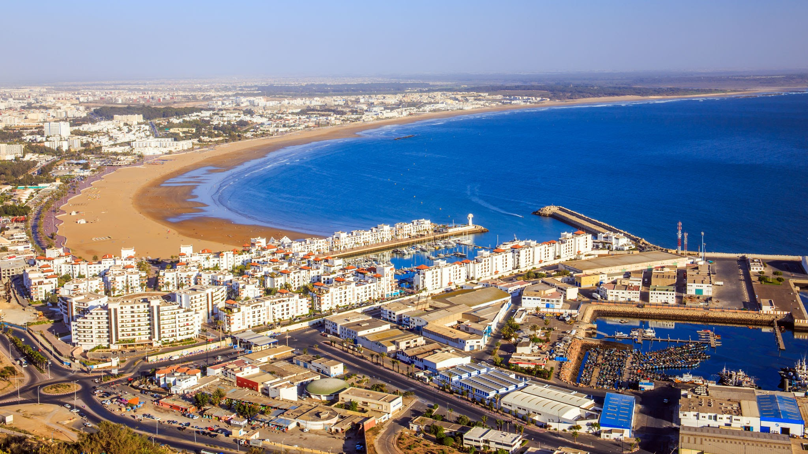
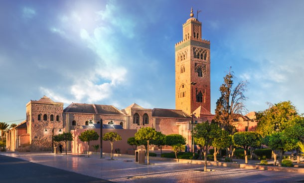
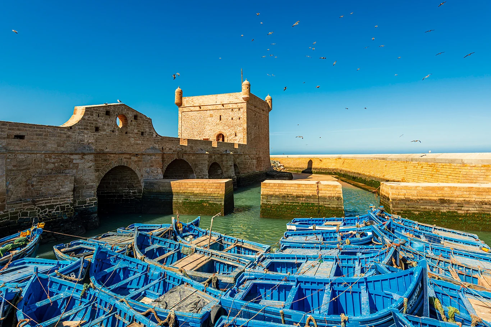
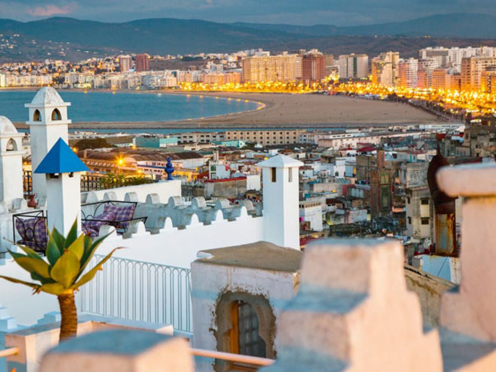

Agadir
Agadir (ⴰⴳⴰⴷⵉⵔ) is a major city in Morocco , on the shore of the Atlantic Ocean near the foot of the Atlas Mountains, just north of the point where the Souss River flows into the ocean, and 509 kilometres (316 mi) south of Casablanca. Agadir is the capital of the Agadir Ida-U-Tanan Prefecture and of the Souss-Massa economic region. The majority of its inhabitants speak Standard Moroccan Amazigh, one of Morocco's two official languages. Agadir is one of the major urban centres of Morocco.
Visiter Moi
Marrakech
Marrakech (ⵎⵕⵕⴰⴽⵛ) is the fourth largest city in the Kingdom of Morocco. It is one of the four Imperial cities of Morocco and is the capital of the Marrakesh-Safi region. The city is situated west of the foothills of the Atlas Mountains. Marrakesh is 580 km (360 mi) southwest of Tangier, 327 km (203 mi) southwest of the Moroccan capital of Rabat, 239 km (149 mi) south of Casablanca, and 246 km (153 mi) northeast of Agadir The region has been inhabited by Berber farmers since Neolithic times.
Visiter Moi
Essaouira
Essaouira (ⵜⴰⵚⵚⵓⵔⵜ) known until the 1960s as Mogador, is a port city in the western Moroccan region of Marakesh-Safi, on the Atlantic coast. It has 77,966 inhabitants as of 2014. The foundation of the city of Essaouira was the work of the Moroccan 'Alawid sultan Mohammed bin Abdallah, who made an original experiment by entrusting it to several renowned architects in 1760, in particular Théodore Cornut and Ahmed al-Inglizi,who designed the city Walls.
Visiter Moi
Tanger
Tanger (ⵟⴰⵏⵊⴰ) is a city in northwestern Morocco, on the coast of the Mediterranean Sea. The city is the capital of the Tanger-Tetouan-Al Hoceima region, as well as the Ṭanja-Aẓila Prefecture of Morocco. Many civilisations and cultures have influenced the history of Tangier, starting from before the 10th century BCE. Starting as a strategic Berber town and then a Phoenician trading centre, Tangier has been a nexus for many cultures to blend with each other.
Visiter Moi